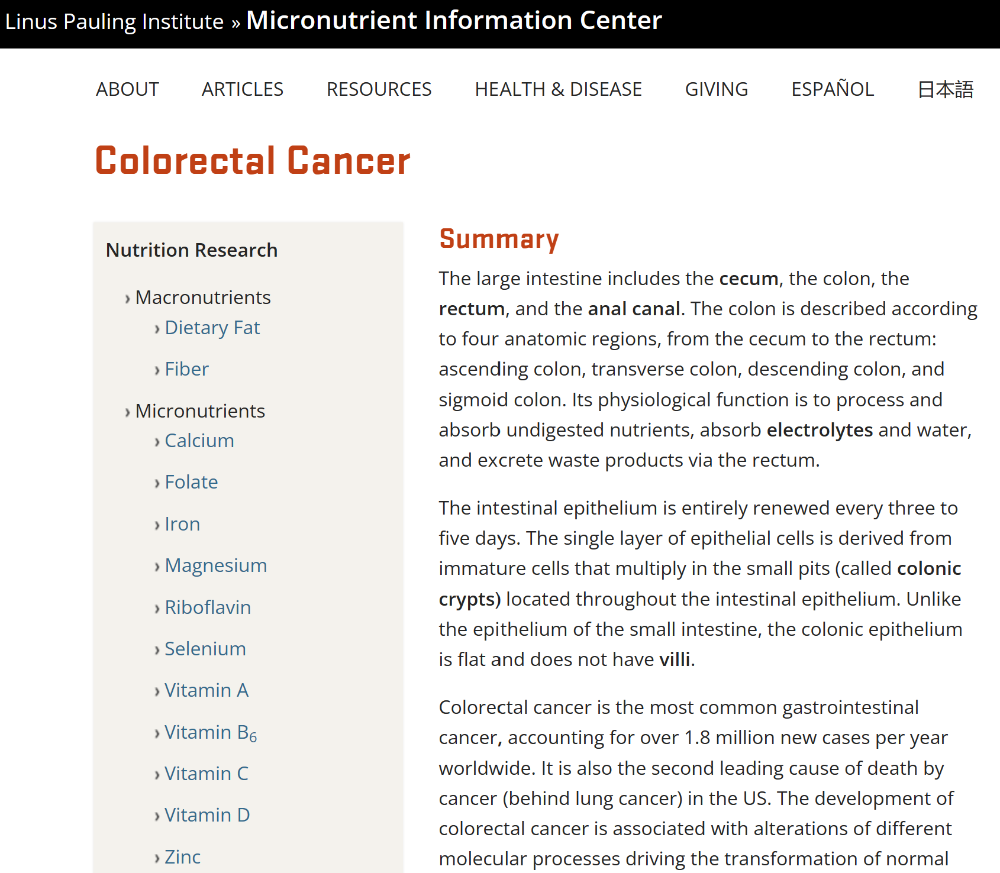
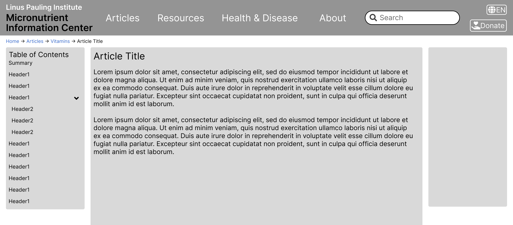

Understanding User Experience
Our process involved collecting user surveys through Hotjar and examining use cases on the website using the GenderMag Cognitive walkthroughs.
GenderMag Cognitive Walkthroughs
GenderMag provides a systematic way to accomplish this and can map usability bugs to a user's problem-solving style, called Facets to better understand why it is an issue. In the below figure, we have customized the Abi persona who has fixed Facet values such as Information Processing Style which refers to how Abi processes information by gathering as much as possible before taking an action compared to a selective style (first promising information).
Cognitive walkthroughs allow us to walk in a user's shoes, through a persona, as they go through a use case (a goal) in some product. The walkthrough starts by selecting a use case (some overall goal to accomplish), then we form a subgoal (small goal to accomplish overall). Then the walkthrough participants will answer whether they think the persona would have formed this subgoal (yes/maybe/no) and mark any facets they used to reach their decision. After that the participants pick actions to accomplish the subgoal using a set of Pre- and Post- action questions until the subgoal or overall goal is finished. Anytime someone said "maybe" or "no" that is marked as a usability bug. Below is the exact wording of the questions.
- Subgoal: Will [persona] have formed this sub-goal as a step to their overall goal?
- Pre-Action: Will [persona] do this? Why?
- Post-Action: If [persona] does this, will they know they did the right thing and are making progress toward their goal? Why?
Designing Fixes
After running 2 walkthrough sessions, we found 8 bugs and a separate discussion led us to target an issue with looking up definitions. Each walkthrough sessions was followed by a fix session where our team and MIC brainstormed Fixes and then we prototyped them.
| Viewing | Subgoal | Action | Facets | Critique |
|---|---|---|---|---|
| Top of Colorectal Cancer Page | #2 Finding specific information on prevention/treatment | (1a) Scroll Down | Attitude Towards Risk | The information at the top doesn't match goals (keywords for treatment/prevention not seen; not in sidebar). Not descriptive enough about where you are or what the article is about. Regarding format the layout makes the title disappear and low contrast. Summary is unproductive … |
|  |  |
| Bug before: The title not being aligned with the content as well as the summary confused Abi (a user) on what page they are on. | Bug after: The prototype design focuses on the main content and uses breadcrumbs to better guide the user. |
Takeaways
We summarize our findings by listing out key guidelines for the MIC website based onprevious usability evaluations and the bugs found and also connecting them to Jakob Nielsen's 10 Usability heuristics. Usability heuristics are principles designers follow to improve the user experience, they are treated as a rule of thumb (not absolute).
-
#1: Visibility of System Status
- Let the user know where they are at any point in time within the system
-
#2: Match between the System and the Real World
- Use simpler words, phrases to explain concepts to the user
-
#4: Consistency and Standards
- Make directions clear for the user to follow along while navigating
-
#7: Flexibility and Efficiency of Use
- Both first-time and returning users should be able to efficiently navigate through the site
-
#6: Recognition rather than Recall
- Use familiar features to the user or keep elements consistent with other systems
-
#8: Aesthetic and Minimalist Design
- Visual cues for the user to get the desired page with the information that they were looking for